Fusée à stabilisation active par ailerons
Conception d'un système d'asservissement autonome pour stabiliser une fusée lors de son décollage, en corrigeant les perturbations aérodynamiques en temps réel via un régulateur PID et un capteur inertiel MPU-6050. Réalisé entièrement de façon autonome en 2 ans de CPGE, de la recherche aux tests en soufflerie.
Première étape : comprendre pourquoi et comment une fusée peut se déstabiliser lors du décollage. Étude du centre de gravité, du centre de poussée et du couple de rappel qui permet à une fusée bien conçue de naturellement revenir à la verticale. L'objectif : ajouter un asservissement actif sur l'axe Y pour corriger les perturbations du vent.
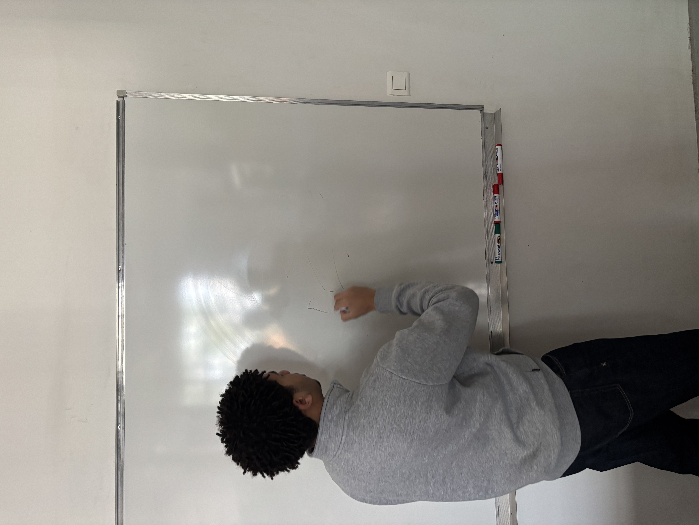
Modélisation 100 % originale de toutes les pièces sur SolidWorks : les ailerons avec leur axe de rotation intégré, les blocs support du servomoteur conçus pour s'emboîter précisément dans le tube PVC, et le cône de la fusée dimensionné pour respecter les critères de stabilité aérodynamique.
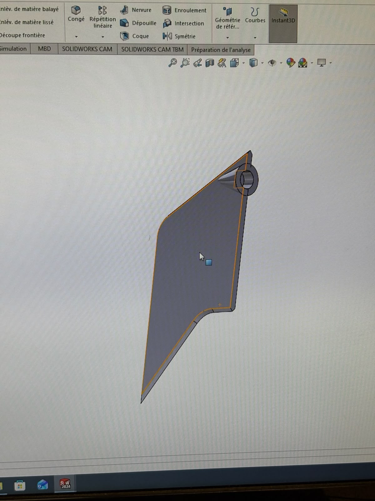
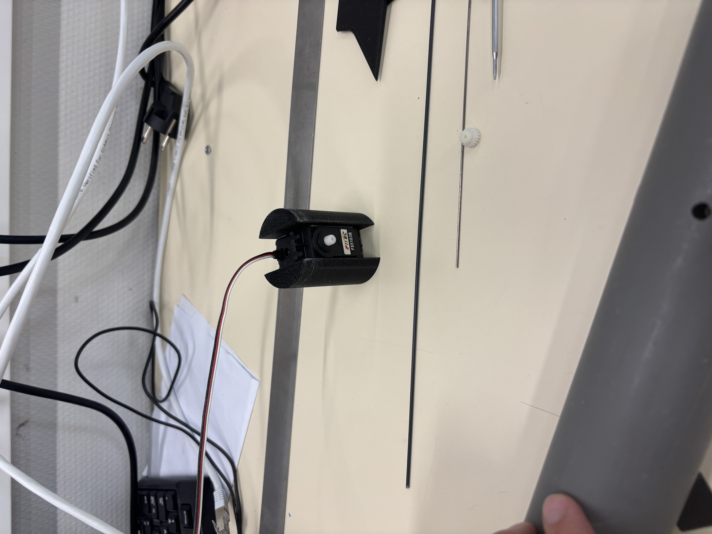
Note : Une structure complète de fusée avait également été modélisée intégralement sur SolidWorks (vue 3D en hero), mais refusée pour l'impression par les enseignants pour des raisons de contraintes matière. Cela a conduit à trouver une solution alternative plus ingénieuse avec un tube PVC recyclé.
Impression FDM des pièces conçues sur SolidWorks. Usinage du tube PVC à la fraiseuse pour créer les logements des tiges des ailerons. Assemblage du servomoteur Hitec FS5103R dans ses blocs imprimés, insertion dans le tube PVC. Les deux ailerons sont reliés par une tige métallique : l'un connecté au servo, l'autre esclave — une solution mécanique ingénieuse pour doubler l'effet avec un seul moteur.
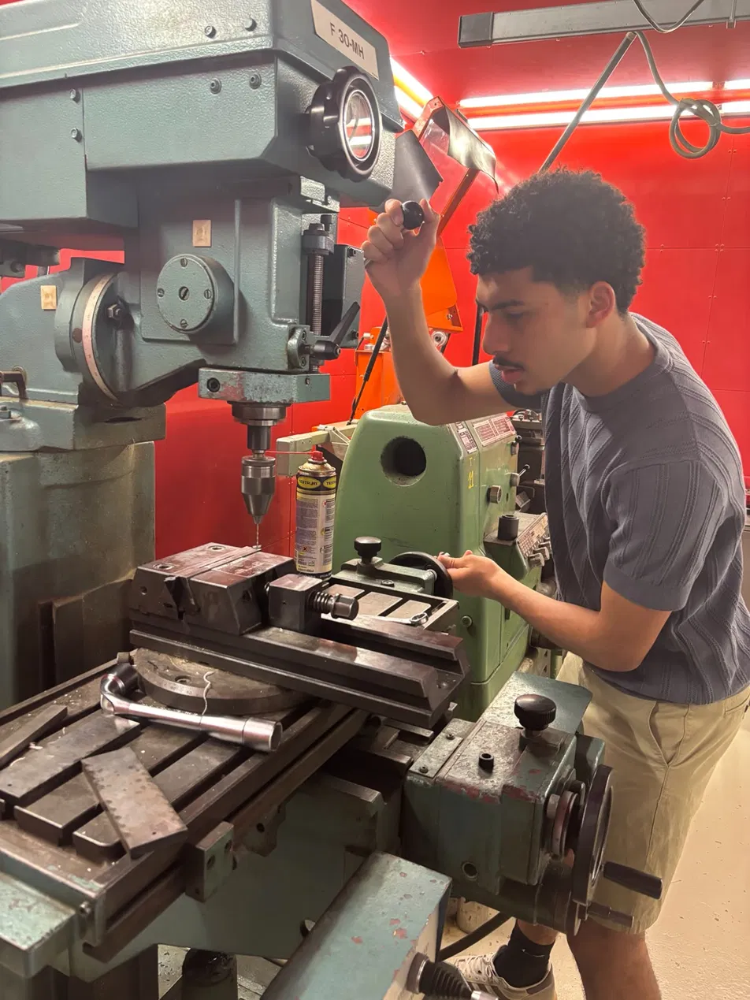
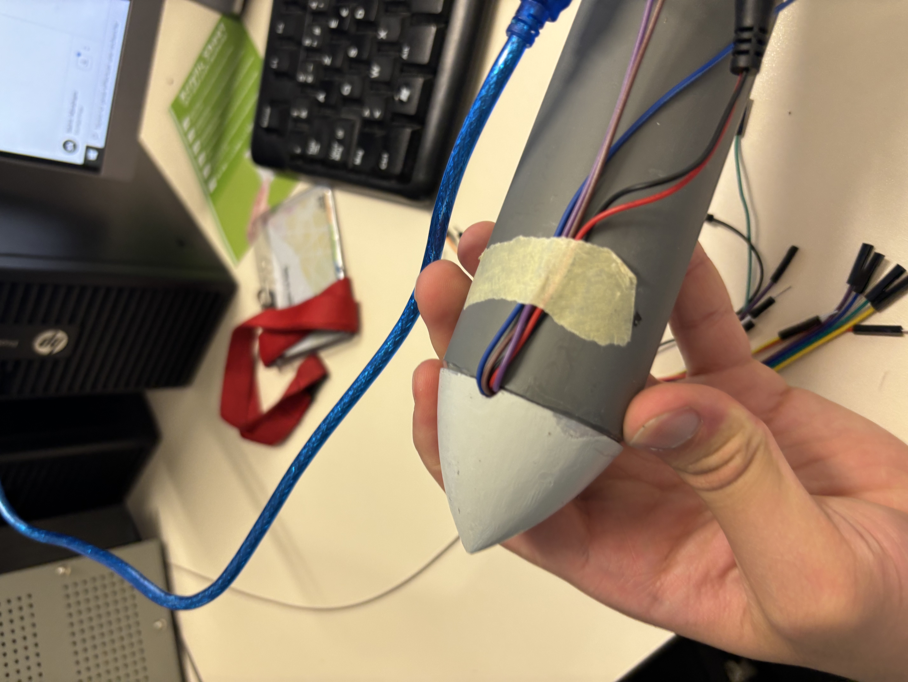
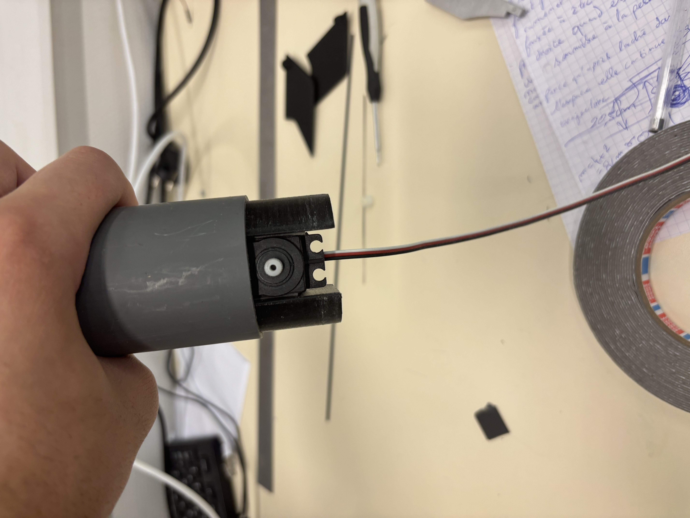
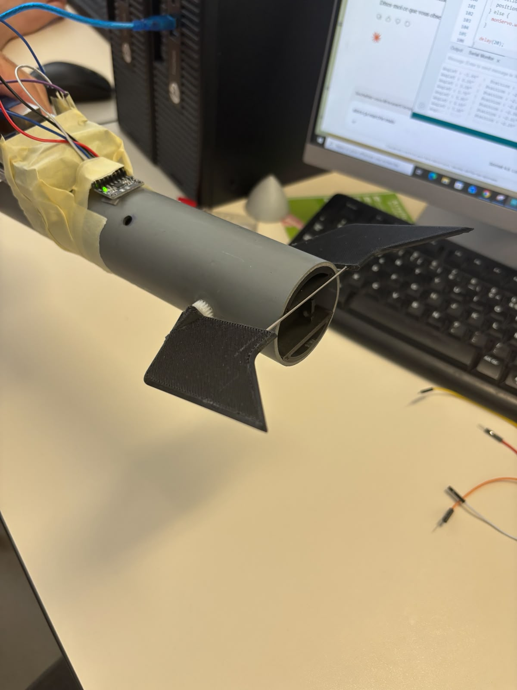
Avant l'asservissement autonome, développement d'une interface de contrôle à distance pour valider le fonctionnement mécanique. Page HTML avec joystick tactile hébergée sur MacBook via Python HTTP server, connectée à l'Arduino via WiFi (adresse IP 192.168.4.1). Puis portage en Bluetooth BLE avec un protocole custom (commande -100 à +100, stop d'urgence, timeout de sécurité automatique).
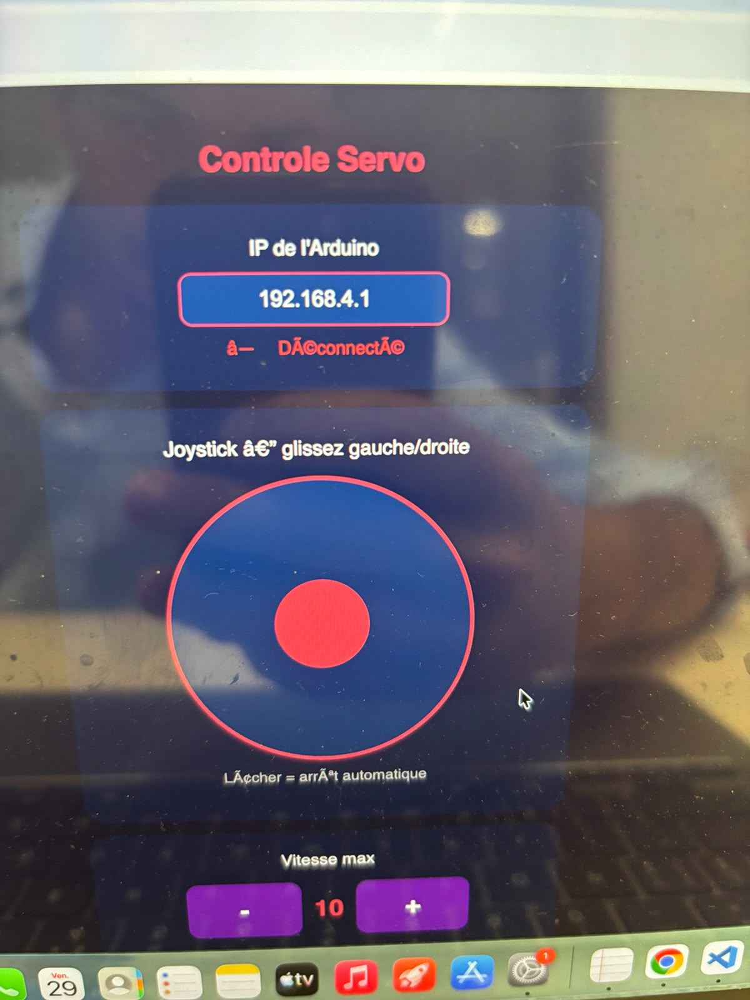
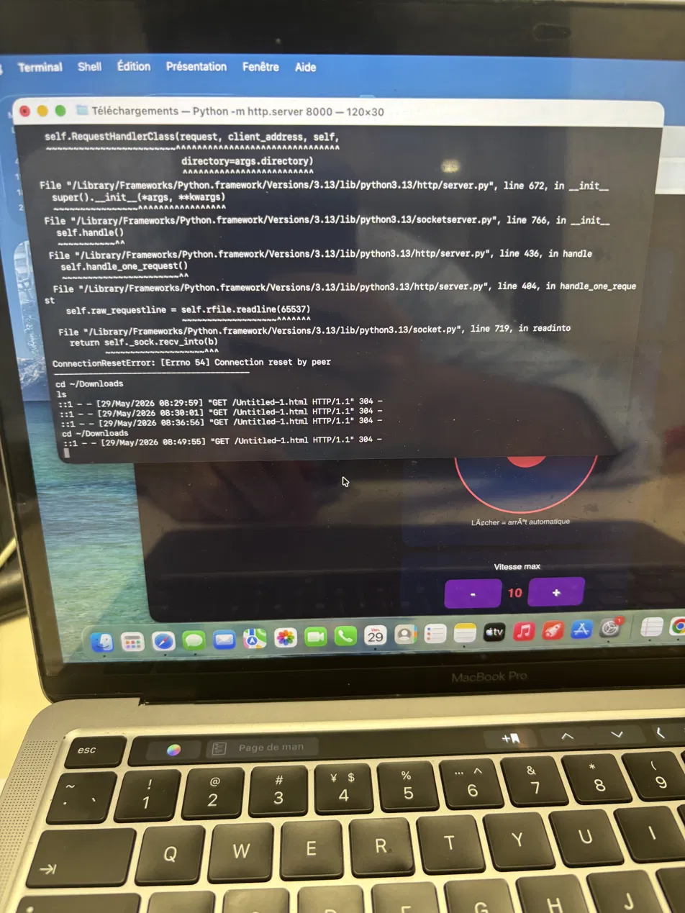
// UUID du service BLE BLEService servoService("19B10000-E8F2-537E-4F6C-D104768A1214"); BLEIntCharacteristic cmdChar("19B10001...", BLERead | BLEWrite); BLEByteCharacteristic stopChar("19B10002...", BLERead | BLEWrite); const int SERVO_STOP = 87; // valeur neutre calibrée const int DEAD_ZONE = 8; // zone morte autour de 0° const unsigned long TIMEOUT_MS = 700; // stop auto si pas de cmd void applyServoCommand(int cmd) { if (emergencyStop) { stopServo(); return; } if (cmd > -DEAD_ZONE && cmd < DEAD_ZONE) { stopServo(); return; } int servoValue = (cmd > 0) ? map(cmd, 0, 100, SERVO_STOP, 180) : map(cmd, -100, 0, 0, SERVO_STOP); servo360.write(clamp(servoValue, 0, 180)); }
Intégration du capteur inertiel MPU-6050 sur la fusée, calibration sur l'axe Y (axe de perturbation choisi). Implémentation d'un régulateur proportionnel : quand la fusée s'incline d'un angle θ, les ailerons s'inclinent du même angle dans le même sens, créant une résistance aérodynamique qui force le redressement. Réglage itératif de la vitesse de réaction pour éviter les oscillations.
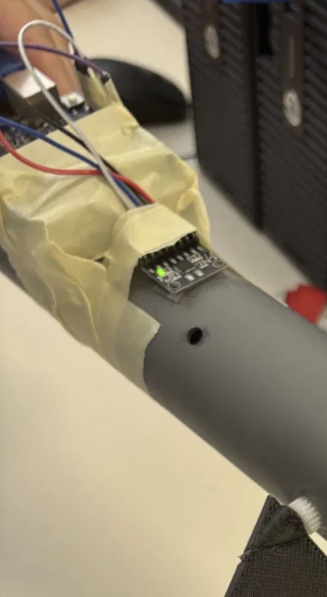
Principe physique : Si la fusée bascule vers le bas (angle négatif), les ailerons basculent aussi vers le bas → la résistance du vent frappe l'aileron et force la structure à se redresser. Pareil dans l'autre sens. Un système simple, mais efficace sur l'axe étudié.
Tests finaux dans la soufflerie du lycée — un équipement industriel générant des vitesses de vent importantes. La fusée est positionnée sur un axe de rotation en Y pour simuler les perturbations de trajectoire lors du décollage. Résultat : l'Arduino avec le MPU-6050 réagit de façon entièrement autonome, les ailerons se corrigent automatiquement et la fusée se redresse. Plusieurs itérations de réglage pour affiner la réactivité.
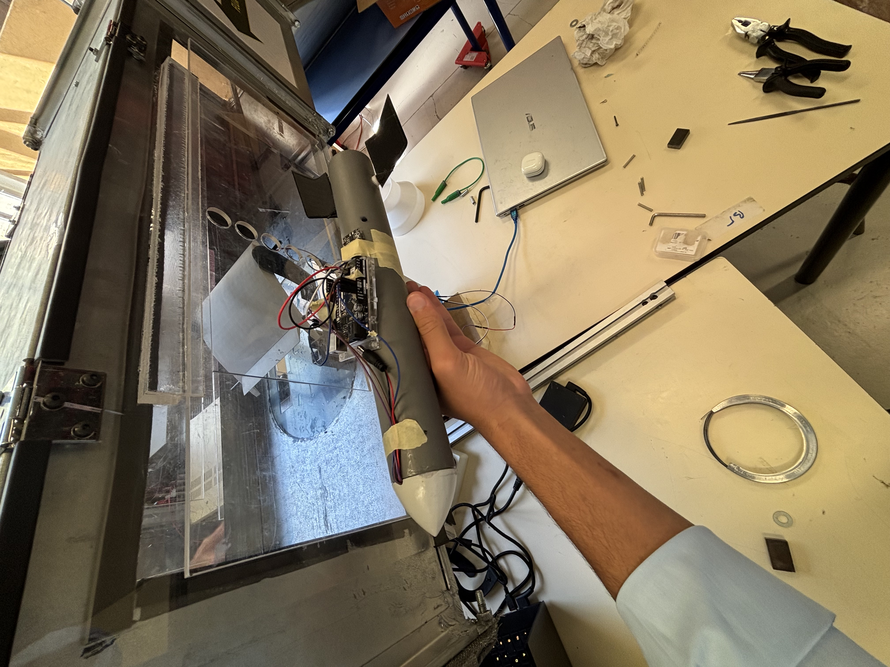

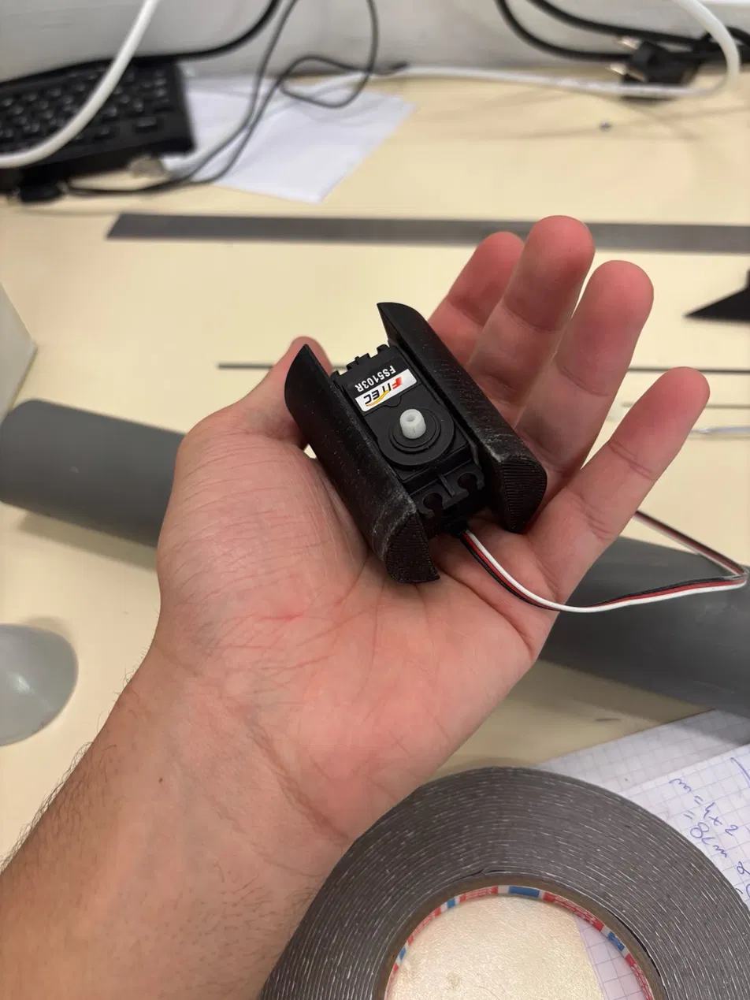